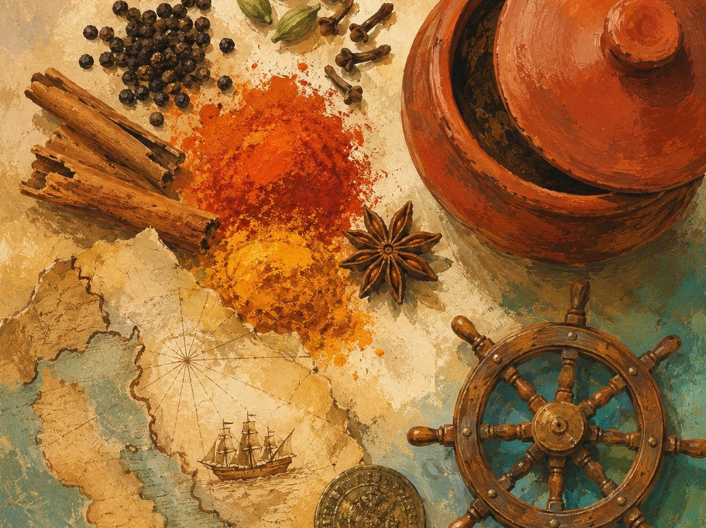
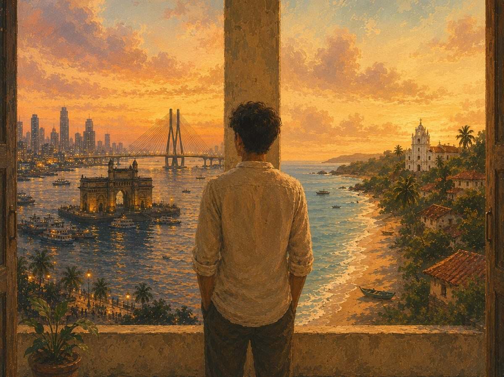
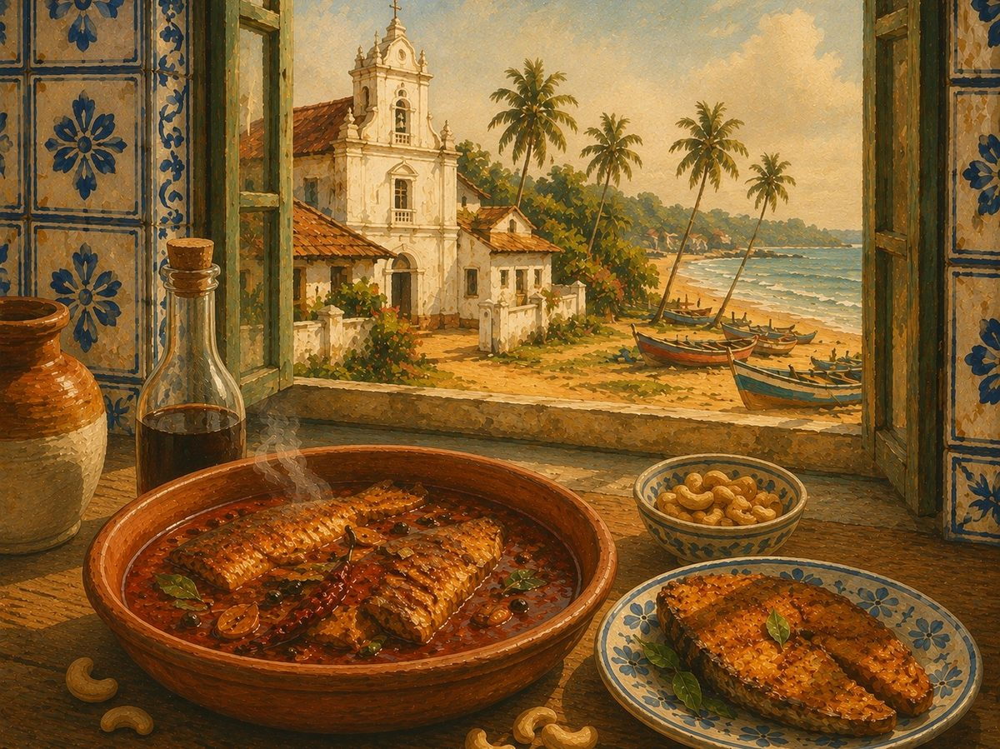
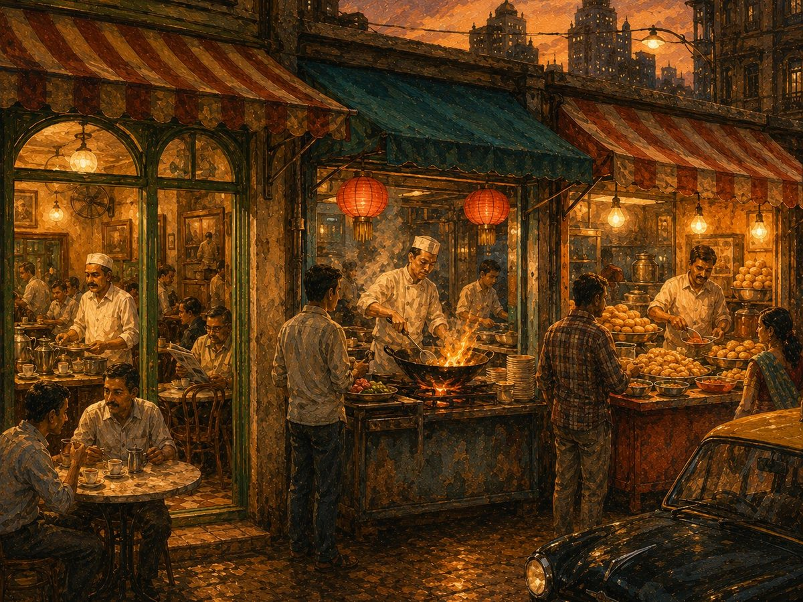
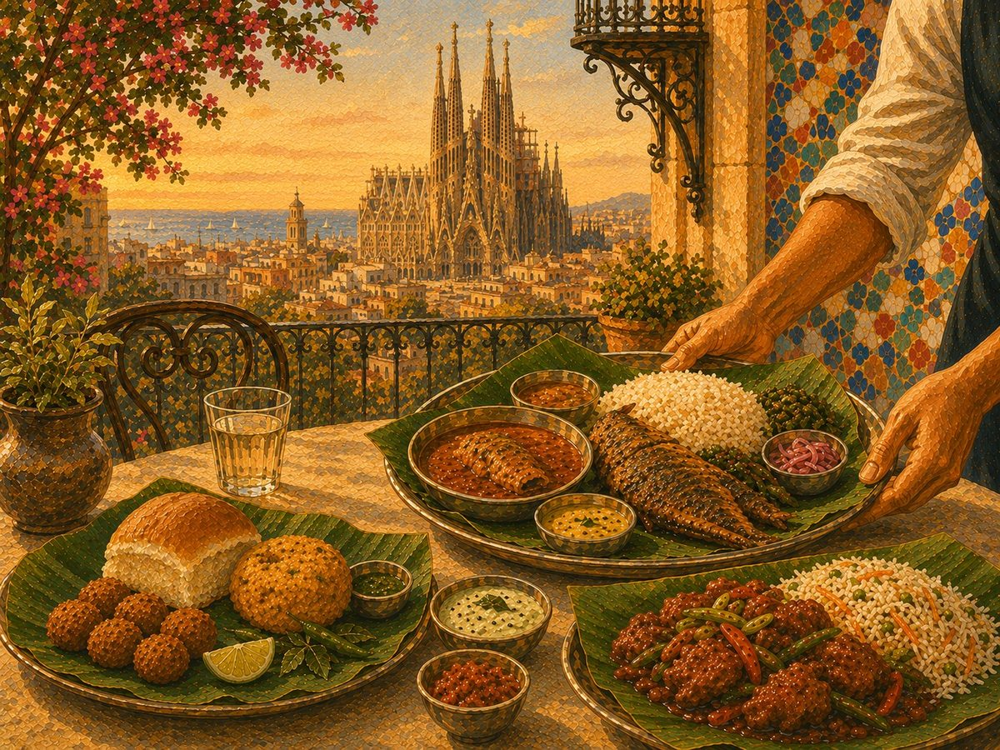
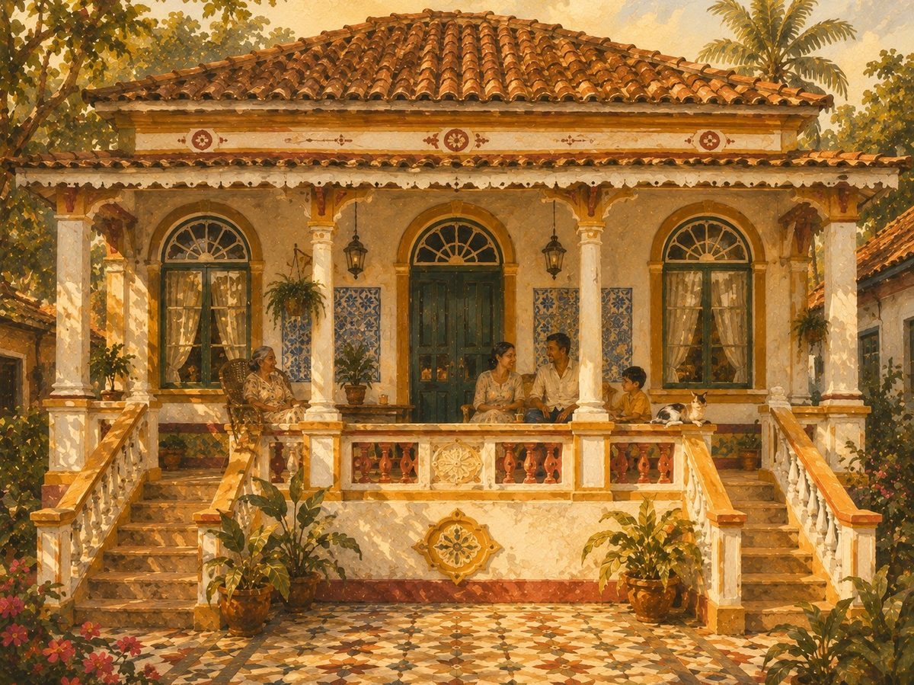

Our Story Nuestra Historia

Food is never just a recipe. It's shaped by history, trade, empires, climate, and economics — but more than anything, by love.
La comida nunca es solo una receta. La moldean la historia, el comercio, los imperios, el clima y la economía — pero, sobre todo, el cariño.

I'm from Mumbai. My family is from Goa. I grew up between two worlds — the quiet, coastal rhythm of Goa, and the fast, restless pulse of Mumbai.
Soy de Mumbai. Mi familia es de Goa. Crecí entre dos mundos — el ritmo tranquilo y costero de Goa, y el pulso rápido e incesante de Mumbai.

Goa was a vital port linking Europe to Asia — shaped by empires long before the Portuguese, and by them for 450 years after. Foreign influence and local tradition grew up side by side here, carving a culture unlike any other in India.
Goa fue un puerto clave que conectaba Europa con Asia — moldeada por imperios mucho antes de los portugueses, y por ellos durante 450 años después. La influencia extranjera y la tradición local crecieron aquí codo con codo, creando una cultura distinta a cualquier otra en la India.

Mumbai carries a different inheritance entirely: the hustle of a city where a hundred communities have always cooked side by side, trading flavours as fast as everything else moves — a city that never sits still, and never really stops eating.
Mumbai lleva una herencia completamente distinta: el ajetreo de una ciudad donde cien comunidades siempre han cocinado codo con codo, intercambiando sabores tan rápido como todo lo demás se mueve — una ciudad que nunca se queda quieta, y que nunca deja de comer.

Both worlds raised me on food made with love — the same love every soulful cuisine carries wherever it travels. Now I want to bring that same love to Barcelona — a city that welcomed me with open arms and made me one of their own. A city I adore.
Los dos mundos me criaron con comida hecha con cariño — el mismo cariño que lleva toda cocina con alma allá donde viaja. Ahora quiero traer ese mismo cariño a Barcelona — una ciudad que me recibió con los brazos abiertos y me hizo sentir como uno más. Una ciudad que adoro.

What ‘Sussegado’ Means
Qué significa ‘Sussegado’
(soo-seh-GAH-doo)
(pronunciación: su-se-GA-do)
It's a word Goan families still use — for a certain kind of afternoon, a certain kind of meal. It means unhurried. Settled. Content, in a quiet way that doesn't need to prove anything.
Es una palabra que las familias goanas todavía usan — para cierto tipo de tarde, cierto tipo de comida. Significa sin prisa. Tranquilo. Contento de una forma silenciosa que no necesita demostrar nada.